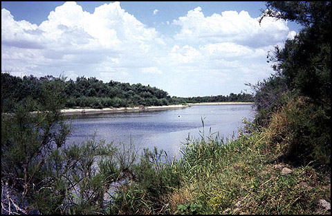

Η ελληνική Θράκη, είναι ένα μικρό τμήμα της μεγάλης αρχαίας Θράκης που εκτεινόταν από τα παράλια του Αιγαίου, του Ελλησπόντου και του Βοσπόρου έως τον `Ιστρο και από τις ακτές του Ευξείνου Πόντου ως τη Μακεδονία.
Η στρατηγική θέση της ευρύτερης Θρακικής ενδοχώρας την οποία διασχίζει ο ποταμός `Εβρος, πλωτός μέχρι και τις αρχές του 20ου αιώνα, αποτελεί τον πόλο έλξης διαφόρων λαών, ιδεών, αγαθών, επιρροών αλλά και επιβουλών από τα προιστορικά χρόνια.
Στην περιοχή σύμφωνα με τον Ηρόδοτο κατοικούσε το δεύτερο σε πληθυσμό έθνος της γης μετά τους Ινδούς : "Θρηίκων δέ έθνος μέγιστόν έστι μετά γε Ίνδούς πάντων ανθρώπων".
Καθώς βρίσκεται πάνω στους χερσαίους και θαλάσσιους δρόμους, στη διασταύρωση δύο πολιτισμικών επιρροών, της Δύσης και της Ανατολής, βίωνε τις επιδράσεις των διαφόρων φυλών κατά τη διάρκεια του χρόνου προσπαθώντας να διατηρήσει τη δική της οντότητα.
Δεν είναι άλλωστε τυχαίο που η μυθολογία θέλοντας να αναδείξει τη σπουδαιότητα της περιοχής αυτής, αναφέρει πως η νύμφη Θράκη, ως μία από τις θυγατέρες του Ωκεανού και της Παρθενόπης, έδωσε το όνομά της στην περιοχή που αρχικά λεγόταν Πέρκη. Αδερφές της ήταν οι νύμφες Ευρώπη, Ασία και Λιβύη - η σημερινή Αφρική.
Με το μύθο αυτό πολύ γλαφυρά αποδίδεται η σαφής συγγένεια που υπάρχει ανάμεσα στον κόσμο των φυτών και των ζώων της περιοχής της Θράκης και σ`αυτούς των τριών ηπείρων.
Η διαχρονική σχέση ποταμού και ανθρώπου αντικατοπτρίζεται στην ιστορία, που πάντα πίστευαν και σέβονταν οι κάτοικοι αυτής της γης. Η εξέλιξη και η ανάπτυξη των διαφόρων κοινωνιών στην ευρύτερη περιοχή του σημερινού νομού `Εβρου συνδέεται άρρηκτα με το ποτάμι.

Στα νερά του ποταμού Ρόμβου πνίγηκε ο `Εβρος, γυιός του βασιλιά της Θράκης Κασσάνδρου, αρνούμενος τον έρωτα της μητριάς του Δαμασίππης (Πλούταρχος, Τα Ηθικά, Περί ποταμών, Γ¢). Για τον άδικο χαμό του οι Θράκες προς τιμήν του ονόμασαν το ποτάμι `Εβρο.
O ιστορικός Λίβιος (181 π.Χ.) αναφέρει ότι όταν ο βασιλιάς της Μακεδονίας Φίλιππος κατέλαβε το όρος Δοουνόξ (το θρακικό όνομα της Ρίλας) αντίκρυσε ένα θαυμάσιο τοπίο από απόκρημνους βράχους, πυκνά δάση, πολυάριθμες γαλάζιες λίμνες που από κάθε μία έτρεχε ένας χείμαρος γάργαρων νερών. `Αλλωστε και η ονομασία Δοουνόξ ή Δούνκα ή Ρόουλα (είναι οι διάφορες θρακικές ονομασίες με ταυτόσημη έννοια) σημαίνει άφθονο νερό. Πάνω από 200 λίμνες κυανίζουν ανάμεσα στα πράσινα λιβάδια και τις 140 βραχώδεις κορυφές σε υψόμετρο άνω των 2.000 μέτρων από την επιφάνεια της θάλασσας. Από δώ πηγάζει ο ποταμός `Εβρος καθώς και ο Νέστος.
Την παρουσία του παλαιολιθικού ανθρώπου (10000-7000 π.Χ.) στην περιοχή μαρτυρούν τα ευρήματα, λίθινα εργαλεία από πυριτόλιθο, που βρέθηκαν στις εύφορες εκτάσεις του π.`Αρδα (οικισμός Ριζίων-Ορεστιάδα ) και του π.`Εβρου (περιοχή Φερών). Οι ομάδες των ανθρώπων είναι ολιγομελείς και ζούν από τη φύση με τη συλλογή καρπών, το ψάρεμα και το κυνήγι αγρίων ζώων. Οι περιοχές του π.`Εβρου και οι ανατολικές πλαγιές της οροσειράς της Ροδόπης υπήρξαν ιδανικοί τόποι αφού συγκέντρωναν μεγάλη ποικιλία φυτικής και ζωικής τροφής.
Κατά τη Νεολιθική περίοδο (4500-3000 π.Χ) συντελείται η επανάσταση στην εξέλιξη του ανθρώπου. Από τροφοσυλλέκτης που ήταν αρχίζει και οργανώνεται συστηματικά, δημιουργεί οικισμούς, ανακαλύπτει νέα υλικά, κατασκευάζει σκεύη, αποτυπώνει τις ιδέες του σε αντικείμενα. Οι νεολιθικοί οικισμοί βρίσκονται σε χώρους που προσφέρονται για γεωργική και κτηνοτροφική δραστηριότητα παράλληλα με το ψάρεμα ή το κυνήγι. Το περιβάλλον του `Εβρου προσφέρεται για τις προυποθέσεις αυτές αφού σε μικρή απόσταση υπάρχουν λόφοι, ποτάμια, κυνηγότοποι και εύφορες πεδιάδες. Τα σημαντικότερα ευρήματα προέρχονται από την ανασκαφή του νεολιθικού οικισμού της Μάκρης στην ευρύτερη περιοχή της Αλεξανδρούπολης που αποδεικνύουν μοναδικές έως τώρα αρχιτεκτονικές κατασκευές. Στην κεντρική περιοχή του `Εβρου έχουν επισημανθεί οικισμοί (Δορίσκος, Πρωτοκκλήσι, Κουφόβουνο σπηλιά "Βούβα", Αγ.Πέτρα Διδυμοτείχου, Σπήλαιο, Λεπτή) αλλά κανείς δεν έχει ανασκαφεί.
Για την επόμενη περίοδο του Χαλκού (3000-1050 π.Χ) η αρχαιολογική έρευνα ανέδειξε το Μικρό Βουνί στη Σαμοθράκη. Είναι περιορισμένες οι γνώσεις για τον υπόλοιπο `Εβρο αφού η έρευνα δεν έχει προχωρήσει στη μελέτη της περιόδου αυτής στην περιοχή.
Ευρήματα οικισμών, μνημείων και ιερών στην ευρύτερη περιφερειακή ζώνη του ποταμού `Εβρου και του δέλτα μαρτυρούν την ύπαρξη δυνατών και πολυπληθών φυλών .
Τον 11ο αι. π.Χ. άρχισε η κάθοδος και η εγκατάσταση θρακικών φύλων. Αντιπροσωπευτικά μνημεία αυτής της εποχής είναι οι οχυρωμένες θέσεις σε κορυφές υψωμάτων, δηλαδή οι θρακικές ακροπόλεις.
Ο λόφος του Αγ. Γεωργίου (ύψος 300μ.) στην Τραϊανούπολη δηλώνει πως στην κορυφή του υψώματος αναπτυσσόταν μια προϊστορική θρακική ακρόπολη, που ελεγχόταν από το θρακικό φύλο των Κικόνων. Ο `Ομηρος αναφέρει τους Κίκονες που κατοικούσαν ανάμεσα στον π.`Εβρο και τη Βιστονίδα λίμνη. Με αυτούς πολέμησε ο Οδυσσέας και κυρίεψε την πόλη τους `Ισμαρο αλλά σεβάστηκε τον Μάρωνα, ιερέα του Απόλλωνα, ο οποίος του έδωσε πλούσια δώρα από καλοφτιαγμένο μάλαμα, άργυρο κ.ά. Οι Κίκονες ήταν καλοί πολεμιστές, γνώριζαν πως να πολεμούν έφιπποι, μια τακτική πολύ επαναστατική για την εποχή. Οικισμοί, νεκροταφεία, υπαίθρια ιερά, βωμοί, βραχογραφίες και άλλα μνημεία που σώζονται μαρτυρούν το επίπεδο του πολιτισμού των Κικόνων. Στη θρησκεία τους κυριαρχούσε η λατρεία του `Ηλιου και αργότερα του μυθικού βασιλιά Ρήσου ως θεός της φύσης, του κυνηγιού και των άγριων ζώων.
Στη θέση "Δρυμός" ανατολικά της Νίψας βρέθηκαν λαξευτά σύμβολα του ήλιου, βωμός και ιερός βράχος θυσιών με αστρικούς σχηματισμούς. Επίσης σε περιοχή βορειοδυτικά του σύγχρονου χωριού αποκαλύφτηκαν παραστάσεις σε βράχο. Ολα αυτά σε συνδυασμό με την τειχισμένη ακρόπολη που βρέθηκε πάνω σε λόφο, μαρτυρούν ότι πολύ πιθανά να αποτελούσε η περιοχή ένα "ιερό άλσος" του Μάρωνα.
Τον 7ο αι.π.Χ. άρχισε η ίδρυση των αποικιών στα παράλια της Θράκης από `Ελληνες αποίκους των νησιών του ανατολικού Αιγαίου και των παραλίων της Μ.Ασίας. Στόχος των αποίκων ήταν η εκμετάλλευση των θρακικών εδαφών, των πλουτοπαραγωγικών πηγών της ενδοχώρας και η ανάπτυξη του εμπορίου και της ναυτιλίας. Μερικές αποικίες παρέμειναν μικρές, άλλες εξελίχθηκαν σε μεγάλες πόλεις - κράτη έχοντας στον έλεγχό τους μεγάλες περιοχές της ενδοχώρας. Μία τέτοια πόλη-κράτος ήταν η αποικία της Σαμοθράκης.
Στη Σαμοθράκη πριν την εγκατάσταση των Ελλήνων κατοικούσε το θρακικό φύλο των Σαΐων, με τους οποίους συνδέονται τα παλιά ονόματα του νησιού Σαόνησος και Σαωκίς. Στον προελληνικό πληθυσμό του νησιού αποδίδεται ο αρχαιότατος τόπος λατρείας του ιερού των Μεγάλων Θεών και των μυστηριακών τελετών. Η λατρεία των Μεγάλων Θεών, περιελάμβανε ιεροτελεστίες και μυστήρια στα οποία γίνονταν δεκτοί όσοι ήθελαν ανεξάρτητα από κοινωνική τάξη, φύλο, ηλικία και εθνική προέλευση. Κατά τη λατρεία, οι αποκαλύψεις και η επικοινωνία με τους θεούς τους έδιναν την ελπίδα μιας καλής τύχης όσο ζούσαν και τους χάριζαν προστασία από τους κινδύνους της θάλασσας.
Γύρω στο 700 π.Χ. `Ελληνες, άποικοι Αιολείς από τη Λέσβο ή την Τρωάδα και `Ιωνες από τη Σάμο εγκαταστάθηκαν στο νησί και ίδρυσαν την αποικία τους κοντά στο Ιερό των Μεγάλων Θεών, στην Παλιάπολη. Οι νέοι κάτοικοι αναμείχθηκαν ειρηνικά με τους ντόπιους που ήταν Θράκες , πήραν στοιχεία από τη λατρεία τους και χρησιμοποίησαν τον ίδιο Ιερό χώρο.
Η πόλη-κράτος της Σαμοθράκης ιδρύει με τη σειρά της διάφορες πόλεις στην απέναντι ακτή, από το όρος `Ισμαρος ως το δέλτα του ποταμού `Εβρου που τότε ήταν πλωτός, για την ενίσχυση των εμπορικών σχέσεων με τη θρακική ενδοχώρα. Πρόκειται για τη Σαμοθρακική Περαία που περιλαμβάνει έξι οικισμούς και ένα τοπωνύμιο: Μεσημβρία, Ζώνη (σύμφωνα με τελευταίες έρευνες βρισκόταν στη θέση της σημερινής Μεσημβρίας), Δρυς, ακρωτήριο Σέρρειον, Σάλη (η πόλις αυτή ταυτίζεται με τη σημερινή Αλεξανδρούπολη), Τέμπυρα ( μικρή πόλη-σταθμός της Εγνατίας Οδού κοντά στην Τραϊανούπολη) και Χαράκωμα (εμπορικός σταθμός κοντά στις εκβολές του `Εβρου).
Ο ποταμός `Εβρος ήταν πλωτός, γεγονός που επέτρεψε την εμπορική διείσδυση των Ελλήνων αποίκων και το σταδιακό εξελληνισμό των ντόπιων Θρακών. Σ`αυτό συνέβαλε αποφασιστικά και η οργάνωση της συγκοινωνίας μεταξύ των ακτών και του εσωτερικού της Θράκης.
Τις προσπάθεις των αποίκων από το νότο για να δημιουργήσουν σταθμούς στη Θρακική ενδοχώρα απηχούν οι μύθοι :
"Ο μητροκτόνος Ορέστης, γιός του Αγαμέμνονα και της Κλυταιμνήστρας, για να γλυτώσει από τη μανία των Ερινύων, περιπλανήθηκε στα μέρη του `Εβρου ώσπου έφτασε στη συμβολή τριών ποταμών, `Εβρου -`Αρδα -Τόντζου , και λούστηκε για να εξαγνιστεί σύμφωνα με το χρησμό. Εκεί έκτισε μία πόλη που προς τιμή του ονομάστηκε Ορεστιάδα,το θρακικό της όνομα ήταν Ουσκουδάμα" και η οποία αργότερα τον καιρό του Αδριανού (130 π.Χ.) έγινε μεγάλο κέντρο και μετονομάστηκε σε Αδριανούπολη.
Στις αρχές του 7ου π.Χ. αι. Αιολείς άποικοι από τη Μυτιλήνη ή τη Μήθυμνα θεμελιώνουν την Αίνο στις ανατολικές όχθες των εκβολών του ποταμού `Εβρου. Είναι η αρχαιότερη από τις παρόχθιες πολιτείες. Από εδώ μπήκαν τα πρώτα ιστιοφόρα στον ποταμό `Εβρο κατά τη διάρκεια της πρώιμης αρχαϊκής εποχής και η Αίνος αποτελούσε ένα από τα πιο σημαντικά λιμάνια της Θράκης για είκοσι έξι αιώνες.
Μετά την εμφάνιση του θρακικού βασιλείου των Οδρυσών (480-460 π.Χ.) και την κατάκτηση της Θράκης από τον Φίλιππο Β' των Μακεδόνων (353-350, 342-339 π.Χ.) αρχίζει να χρησιμοποιείται ο χερσαίος δρόμος που περνάει παράλληλα με τη δυτική όχθη του ποταμού `Εβρου και συνδέει την Φιλιππούπολη, πόλη που ίδρυσε ο Φίλιππος Β` το 341 π.Χ., με το λιμάνι του Δορίσκου.
Σημαντικός αριθμός ευρημάτων από το δέλτα `Εβρου ως το βόρειο τμήμα του νομού πιστοποιεί τη μεγάλη κινητικότητα κατά την κλασσική και ελληνιστική περίοδο και φωτίζουν την ανάπτυξη της περιοχής.
Στο Δορίσκο όπου κατά τους περσικούς πολέμους ο Δαρείος (512 π.Χ.) εγκατέστησε φρουρά και ο Ξέρξης (480 π.Χ.) μέτρησε τις χερσαίες και ναυτικές δυνάμεις του, βρέθηκε στη θέση "Σαράγια" περίβολο τμήμα τείχους της πόλης (4ος π.Χ. αι.).
Στους Κήπους και τη Γεμιστή όπου τοποθετείται η αρχαία Δύμη και στη Δαδιά βρέθηκαν αρχαία νομίσματα, όστρακα αγγείων και πήλινα ειδώλια. Από την Κορνοφωλιά προέρχεται αναθηματικό ανάγλυφο με επιγραφή "Κυρίω `Εβρω".